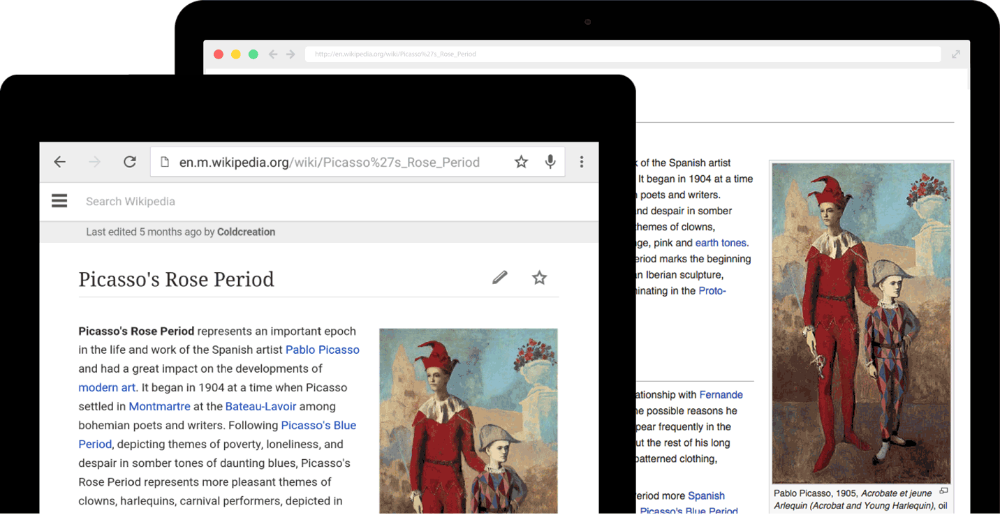
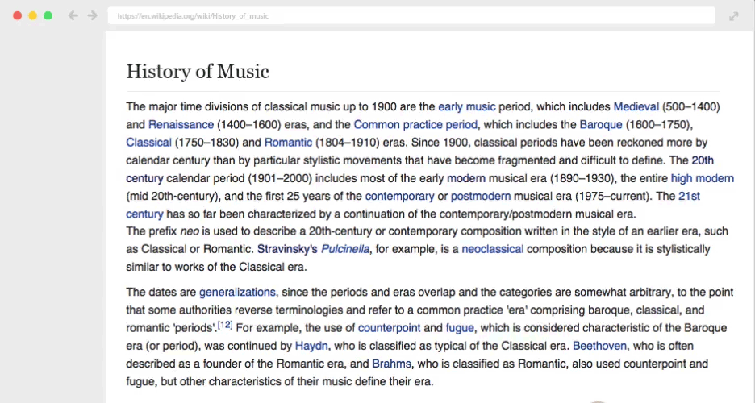
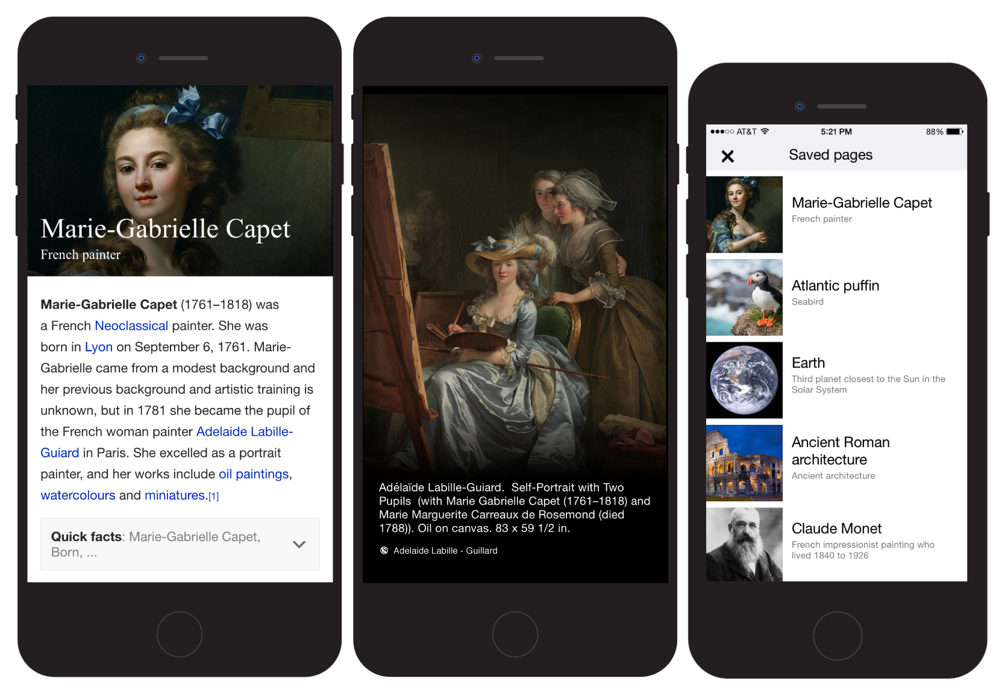
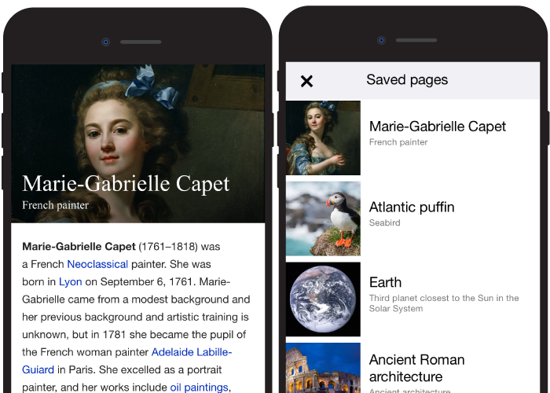

I lead a project to update the typography on Wikipedia Desktop & mobile web. This included new font specifications, leading and sizing for headings & body copy in 235 different languages including non latin scripts such as Hebrew, Arabic & Navajo. This project was tested out on mobile for 6 months before being brought to desktop.

We created link previews to support quick investigation of links on Wikipedia.
This feature is currently testing on Greek and Catalan Wikipedia. It required 3 different layouts to support a cohesive image text layout. The key question was ‘How much content is needed for a user to get context?'

We designed the Android Native app with an image centric approach, fast search and a card based UI. We use the beta channel on Android to allow users to test drive new features and give us feedback. Due to heavy Android adoption in markets critical to Wikipedia, we focus on non latin languages, platform integration with Google and Wikipedia zero (a service where select mobile operators waive data charges)

We shipped a native iOS app to create new forms of presentation, styling, sharing, discovery and casual contributions. We worked towards making the first fold assistive and removing the noise. Articles have prominent lead image, a short description and a clean first sentence to let users quickly answer the ‘what is this’ question. All saved pages are available when a user wants to read them during a commute or when offline. ‘Location’ is leveraged to show nearby articles and ‘share a fact’ lets users share a sentence on their favorite social networks.